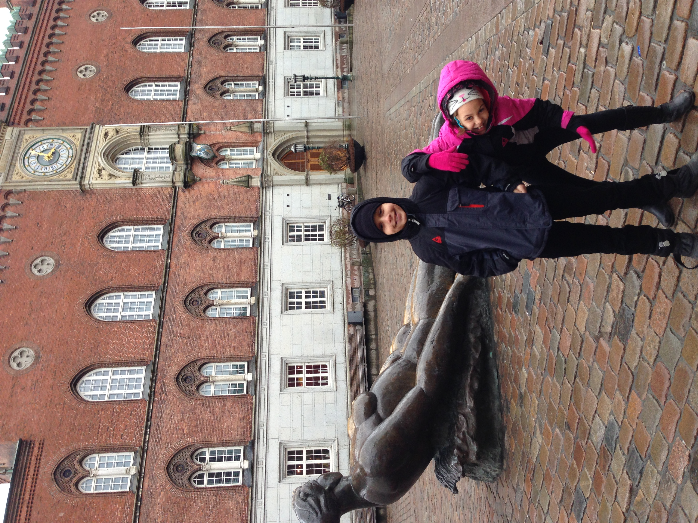
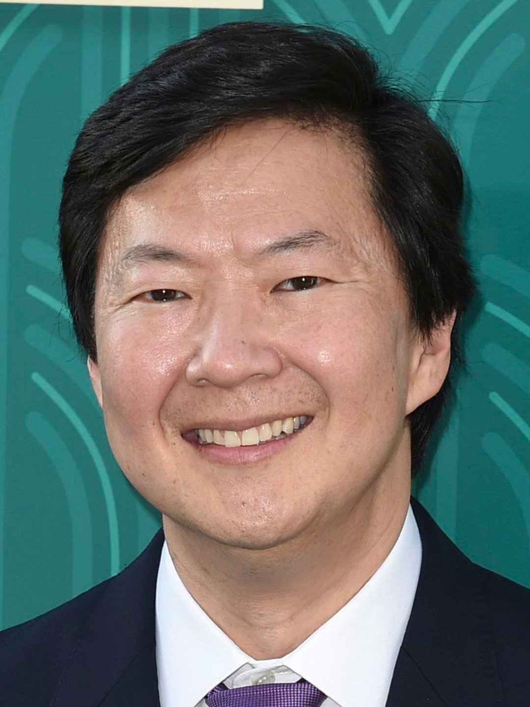
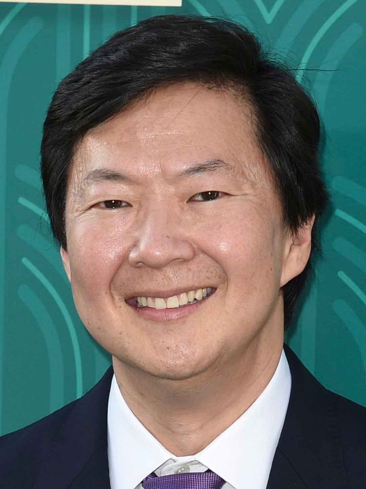

Hey, my name is Noah Kevo. I go to GEMS World Academy Chicago. I am a freshman in highschool. Going to school in the morning takes me a bit longer than most people because I live out in the suburbs. I live with my sister, mom, grandma, and grandpa. Before I moved to Chicago, I lived abroad. I lived in Denmark for four years. Denmark is an amazing country, but it did rain a lot.

I wouldn't say I have many interests and hobbies. I would say I am the type of person to listen to a song for an hour on repeat, then get bored of it, and then find a new song to listen to. Although, when I do find that new song I love it. Some of my hobbies are playing basketball, playing video games, reading, dancing, and cooking. I used to cook a lot, and now I am starting to again. I love cooking because it's a product way to spend time.
My Goals
Some of my goals when I grow older are to become a cardiologist, stop procrastinating, and travel the US. I guess I also want to learn how to dance better, but that comes with time. I think right now, I can dance about the same as the skeleton. If I don't become a cardiologist, I'd really like to be a professor at a university. I don't know what university, but I do know that I would somewhat like to teach. One of my favorite professors is Walter Lewin. He makes amazing videos and he is a really good teacher. Becoming like Ken Jeong would also be really cool.
 
